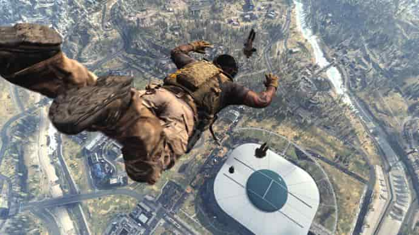
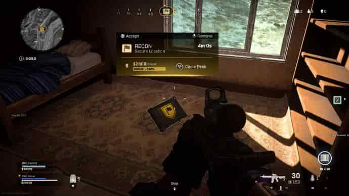
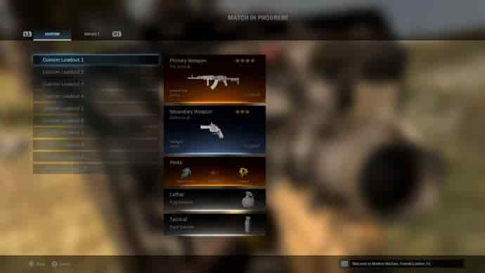
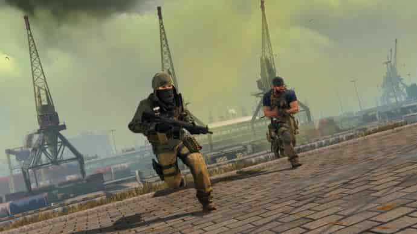

Call of Duty: Warzone beginners' guide: helpful things you should know
Let's start at the beginning with a basic explainer of the mode. In Warzone you're thrown into a last-player-standing battle with a total of 150 players - more than the usual 100 found in games like PUBG and Fortnite - and by default you'll be part of a three-player squad.
Survive until you're the last squad standing - even if it's just one of you - and you'll win the game. But, of course, that's considerably easier said than done, seeing as there are about 147 other players that want to do the same thing.
Aside from that basic premise, the other key points are that you'll all start out in a plane - again, standard for a battle royale - flying over the map. From here you can view the flight path in the in-game map and plan where you and your pals want to land, and from the moment you jump out of the plane it's time to fight tooth and nail for survival. Avoid the periodically closing ring of toxic gas, which will kill you in a few seconds if you stand in it. Avoid being killed by other players, and generally avoid just being killed, and you'll stand a chance.
Basic Warzone tips: how it differs from standard battle royales
Warzone differs from standard games in the genre like PUBG, Fortnite and Apex Legends in a number of ways. Here's a quick rundown of the key ones:
Weapon attachments aren't part of the loot - you'll still need to loot when you land but you will land with at least a pistol, which is more than most!
You can access pre-made builds in-game that will full kit you out.
There are killstreaks - staples from Call of Duty multiplayer - that let you do things like calling in airstrikes or attack helicopters when you get a certain number of kills.
Loot mostly revolves around chests, like in Apex Legends or Fortnite. There's only a smaller amount of low-quality loot to be found on the ground.
There are in-game mini missions, called Contracts, that you can collect and complete in-game for loot and other rewards.
You can respawn! Or at least you sort of can. More on that below.
General Warzone tips and basics
You can shoot people while you're all still in the air from the plane ride. Open your parachute and then close it again, and you'll draw your weapon, allowing you to shoot at other enemies both in the air and down below whilst you plummet towards the ground. Just remember to re-open your 'chute later on!
Your parachute is infinitely re-usable. Unlike PUBG or even Fortnite, you can open your parachute multiple times when dropping from the plane and at any other time when you're far enough from the ground: dropping off the top of a medium-height building, out of a chopper, the works. It's useful for travelling medium distances quickly, too!

The 'circle' - the safe zone where you won't be affect by the gas, marked by a white circle on the map - moves in smaller increments than most battle royales for most of the game. For the first three quarters of a game or so, you'll rarely be completely displaced, which means if you get to the centre you can expect to stay there safely for a while.
Each player can revive once, via the Gulag. More details in our dedicated Warzone Gulag guide, but the basics: when you die, you go into a 1v1 scenario and the winner gets to drop back into the action near their squad. You can only go once. There's also a self-revive ability you can buy from one of the in-game stores, too, and your squad can also "buy you back in" by visiting one of the designated stores on the map (you can ping these periodically when you're dead).
There are in-game stores! These are marked by little shopping trollies on your map. Visit one and use cash earned in that match - from kills and collecting loose cash from looting - to buy things like additional armour plates, the self-resurrection ability, or other bonuses.
As a rule, spend your cash early and often. Self-resurrect is the priority at $4250, after that it's your choice but don't sit on your money. If you die you lose it, even if you come back via the Gulag, so there's no point hoarding unless you're saving for something specific.
The gas moves fast, and does a fair bit of damage. This isn't like other games where you can hang out in the gas for a while as a sneaky ploy (and especially not now that early Warzone gas exploit has been patched!), so don't hang about in there. If you're playing an edge-of-the-circle strategy (more on that below) do not get caught out.

You can grind some XP in the pre-game. Get some XP on your weapons or overall character by getting kills in the pre-game "warmup" mode while everyone loads in before the proper match. Plus it's fun, and good practice while you kill the time.
Items are colour-coded by rarity, which generally (but not always) indicates their quality. White is common, green uncommon, blue rare, purple epic and orange legendary. The rarity also indicates the number of attachments or perks an item has, up to a max of four!
Tall buildings are incredible for camping and there are great combos for making it even more effective. Use a scouting Contract, which rewards you for holding an area briefly by revealing the location of the next circle in yellow. Find a tall building near the centre of that, kit yourself out with a scoped rifle of some kind and use a claymore by the door to the roof. Some buildings are upwards of thirteen stories and give you amazing sight advantages for sniping or marking enemies, and you can parachute down to rapidly reposition when needed!

More advanced Warzone tips and strategies for getting the win
On the flipside, unless your a crack shot, sniping back and forth can be wasteful. If you get locked in a prolonged battle where they also know where you are and return fire, it can burn through your shield plates and ammo but people will have the ability to heal up and leave anyway. Only engage if you have the advantage (which you do more often from height!).
Riding the edge of the circle is a high-risk, high-reward strategy. It's risky because the circle moves fast in the later game and the gas is lethal, but keeping your back to the circle means you're guaranteed no one else can flank you from behind. Drop somewhere wide out on the map, loot safely, and gradually move inwards in time with the closing circle to safely get to the later game.
When you see enemies, be aggressive. Warzone is hugely psychological, and a hail of incoming fire can be enough to spook enemies into leaving cover, panicking, or otherwise losing out. It's easier to rush enemies than to hold a position in most cases, if you're smart with cover and sightlines. Don't be afraid to trade fire!

Engage according to your gear. All that said about aggression, there's no point fighting in close ranger with a sniper, or long range with an SMG. The guns are pretty inflexible, barring the Assault Rifles and LMGs which are a bit more rounded, so fight according to your loadout and specialism. Here are the best Warzone loadouts for each distance, while we're at it.
"Hot drop" for practice. While being a seasoned Modern Warfare multiplayer player will obviously help, the ranges and environments of Warzone are very different. If you want to improve at basic firefights, drop into busy areas under the flightpath, which usually means in the centre of the map. There'll be lots of people to fight right away, so it's great for learning but less great for actually winning that match in particular - unless you're skilled or lucky!
Don't self-res in the gas, unless you're very near the exit. You'll die so fast to the gas after getting up that it won't be worth using it. Instead go to the Gulag to try your chances or gate a friend to buy you back in!
Learn the map. We've got an early Call of Duty: Warzone map guide up and running which explains all the key points. Study it and get familiar with the intricacies and you'll be at an immediate advantage over plenty of others. There are a huge amount of nuances to it (did you know you can rappel up elevator shafts as well as down them?) so get familiar and get the edge over your foes!
Pool your resources. It's very hard to win Warzone entirely on your own, although you can of course try (by toggling "auto fill" off in the pre-game menu). The best we've done on our own is third. In a squad, you can literally pool your money together to buy each other items at shopping stations, you can drop gear for each other to share excess ammo, weapons or shield plates, mark enemies for each other and strategies. Like so many things, Warzone is better with friends.